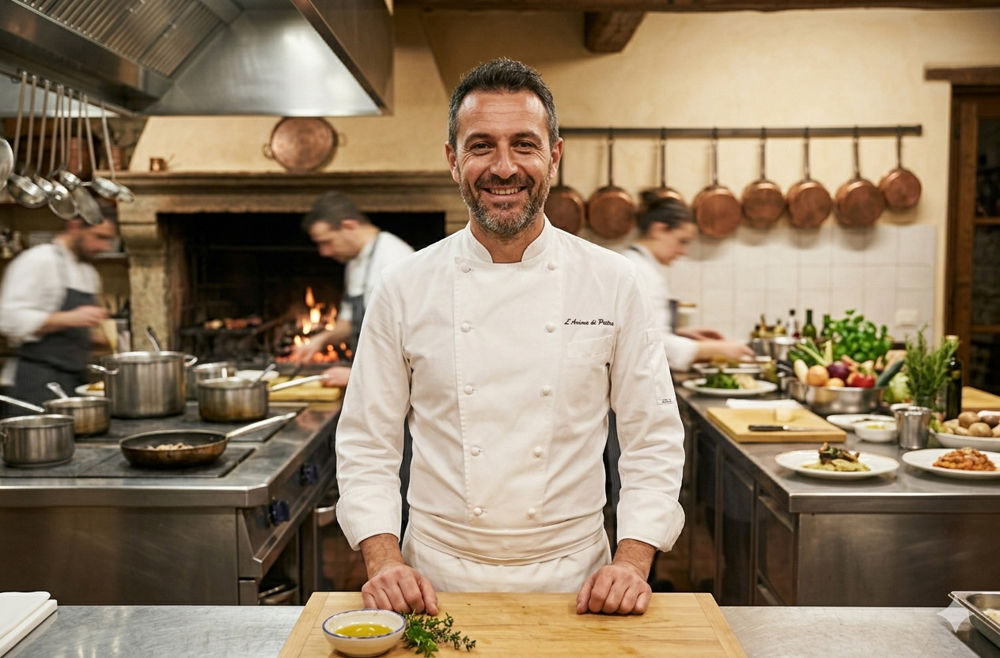

La nostra storia
Dal 1984, la nostra cucina è un atto d’amore che inizia ogni mattina sul grande tavolo di legno in cucina.
Fondato da Nonno Giuseppe e Nonna Maria in una suggestiva via del centro, Sapori di Casa è nato con un sogno semplice
ma ambizioso: portare in tavola l'autentica pasta fatta a mano, quella che profuma di basilico e di domenica in famiglia.
Dalle prime storiche tagliatelle al ragù antico, citate già negli anni '80 come eccellenza locale, abbiamo mantenuto intatto
il segreto della nostra tradizione, trasformando una piccola bottega del gusto in un punto di riferimento per chiunque
cerchi i sapori veri di una volta.
Negli anni, il ristorante è cresciuto insieme ai suoi ospiti, aprendo le porte del suggestivo "Dehor degli Ulivi" e
ampliando i propri orizzonti grazie al tocco esperto di Marco. Rientrato da un’esperienza internazionale, Marco ha saputo
unire la precisione tecnica alla sacralità delle ricette di famiglia. Oggi, la nostra esperienza culinaria è arricchita
dalla "Cantina del Gusto" — uno scrigno sotterraneo con oltre 300 etichette italiane — e da un impegno concreto per la
sostenibilità. Collaboriamo direttamente con i produttori locali per garantire ingredienti a Km 0, portando in tavola
l’eccellenza del territorio entro 24 ore dalla raccolta.
Oggi, giunti al traguardo dei quarant'anni di storia, la terza generazione della famiglia guida Sapori di Casa verso il
futuro con la stessa passione degli inizi. Abbiamo saputo reinventarci nei momenti difficili, portando i nostri sughi
artigianali nelle vostre case, e festeggiamo questo anniversario con un menu speciale che rilegge i piatti iconici del
1984 con tecniche moderne. Entrare nel nostro ristorante oggi significa immergersi in un’atmosfera dove il tempo sembra
essersi fermato, ma dove ogni dettaglio evolve per offrirvi un’accoglienza impeccabile. La nostra promessa rimane la stessa
di quarant'anni fa: farvi sentire, morso dopo morso, finalmente a casa.

Il nostro Chef
Marco cresce tra i tavoli del locale di famiglia, assorbendo fin da piccolo la dedizione al lavoro del padre Giuseppe e
il tocco magico della madre Maria in cucina. Tuttavia, la sua ambizione lo spinge a varcare i confini nazionali per
affinare la sua tecnica: trascorre diversi anni a Parigi, lavorando in rinomati ristoranti stellati dove apprende i
segreti della gestione della brigata e l'importanza della precisione estetica nel piatto. Questa esperienza
internazionale non allontana Marco dalle sue radici, ma al contrario gli fornisce gli strumenti per elevare la tradizione
familiare a un nuovo standard di eccellenza.
Al suo rientro definitivo nel 2002, Marco assume la guida della cucina portando una ventata di freschezza necessaria per
affrontare il nuovo millennio. Con un approccio rispettoso ma innovativo, introduce nuove tecniche di cottura, come il
sottovuoto, per esaltare i sapori classici senza snaturarli e cura personalmente la selezione delle materie prime,
creando un legame diretto con i piccoli produttori locali. Sotto la sua direzione, il ristorante si trasforma da semplice
trattoria di quartiere a un'oasi gastronomica ricercata, capace di attirare una clientela internazionale pur mantenendo
quell'atmosfera calda e accogliente che lo ha reso celebre nel 1984.